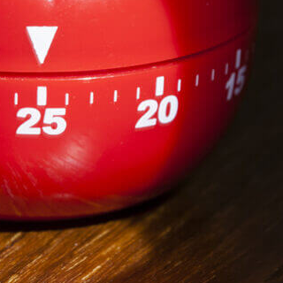

Главные проблемы в обучении
Ни в школе, ни в институте нас не учат тому, как правильно изучать материал. Мы готовимся кэкзаменам иучим билеты. Мы тренируемся решать однообразные задачи, чтобы лучше сдать тест, но часто в итоге это недает намреального знания. Зубрежка быстро выветривается и не приносит пользы.
Вывод:учиться тоже нужно уметь, но почему-то этому мало где учат. Что с этим делать?
Конкретные техники и упражнения помогают изменить подход к обучению, сделать его эффективным и захватывающим. Эти же техники применяются на примере обучения в Практикуме.
Техники обучения
Пять практик от Барбары Оакли
-

Два вида внимания
Глубокие знания возникают, если чередовать сфокусированное и рассеянное мышление.
-

Recall
Вспоминайте изученное — это позволит соединить разрозненные порции памяти.
-

Интерливинг
Изучайте несколько навыков одновременно, они обогащают друг друга.
-

Вопросы
Слушая преподавателя, придумывайте хороший вопрос, который вас действительно волнует.
-

Иллюзия компетентности
Повторите про себя, запишите, расскажите другу: вам только кажется, что вы владеете новой темой.
-

Методика «Помодоро»
Методика увеличения эффективности работы при меньших временных затратах за счёт глубокой концентрации и коротких перерывов. «Помидоры» длятся полчаса: 25 минут работы и 5 минут отдыха.
Видео нa TED
Для тех, кто любит прокрастинировать
История Барбары Оакли.
С детства Барбаре не давалась математика. Она считала себя законченным гуманитарием, причём далеко не самым умным. В армии она изучала русский язык, чтобы получить надбавку, да так успешно, что её выдвинули в командиры. Но для продвижения по службе нужно было сдавать математику. И тогда Барбара придумала свой подход к точным наукам. Оказалось, если вам что-то «плохо даётся», ваши добытые трудом знания гораздо глубже, чем у тех, кому всё ясно с первого взгляда.
Метод Фейнмана
Выучить и не забыть.
Подробнее ⟶Цифры и факты
Про учёбу и мозг
-
86 миллиардов
Число нейронов в мозге человека
-
2.1 миллиарда
Число нуждающихся в повышении квалификации
Всемирный Банк, 2017
-
1000 терабайт
Объём памяти человека
-
500 триллионов
Число ответственных за обучение нервных синапсов у взрослого человека
-
420 миллионов
Число взрослых людей моложе 25 лет, не имеющих образования для трудоустройства
Всемирный Банк, 2017
-
17–20 лет
Пик обучаемости
-
1885 год
Открытие кривой забывания
-
1889 год
Открытие условного рефлекса
Весь мир - школа
Страсть и новаторство Сала Хана меняют процесс обучения миллионов студентов по всему миру. Книгу «Весь мир — школа» нужно прочитать всем, кто занимается образованием — так учащиеся повсюду смогут получить навыки и знания, которые приносят успех в школе, карьере и жизни.Джордж Лукас

Принципы обучения
от Джоша Кауфмана
-
1
Выберите привлекательный проект.
-
2
Сосредоточьтесь на каком-то одном навыке.
-
3
Определите целевой уровень мастерства.
-
4
Разбейте навык на элементы.
-
5
Приготовьте всё необходимое для занятий.
-
6
Устраните препятствия для занятий.
-
7
Выделите специальное время для занятий.
-
8
Создайте быстрые петли обратной связи.
-
9
Занимайтесь по расписанию, короткими интенсивными интервалами.
-
10
Уделяйте внимание количеству и скорости.